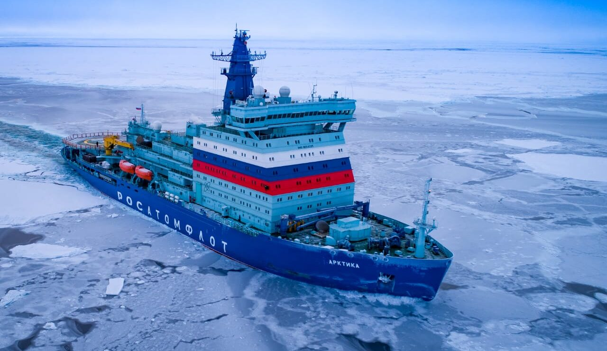

И, конечно, эта страница будет про...
Ледоколы 🚢!
Северный морской путь раньше был несбыточной мечтой — это самый короткий маршрут по воде из Европы в Азию, в 2 раза быстрее, чем через Суэцкий канал. Но есть проблема — даже летом там на пути встречаются льды и есть сложности с судоходством. А зимой практически весь путь затянут льдом.
Основной способ транспортировки грузов по Севморпути — в сопровождении ледокола. После строительства атомных гигантов серии 22220 проводка судов по льдам стала гораздо проще. Эти ледоколы называют новыми покорителями Арктики. Для них даже трёхметровый лёд не препятствие. Ледоколы атомные — в этих краях сложности с дозаправкой судна, а у ядерных силовых установок большая автономность — на одном заряде судно может ходить до 7 лет.

Атомные ледоколы — новые покорители Арктики
| Ледокол | его ресурс |
|---|---|
| Арктика | 219 тыс/часов |